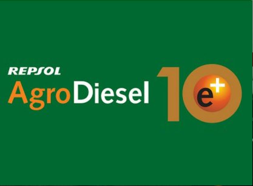
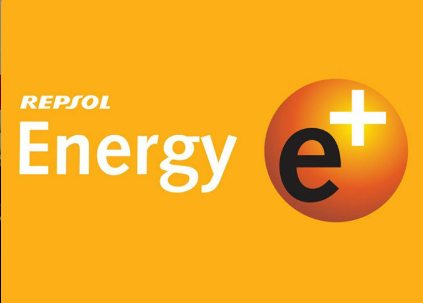
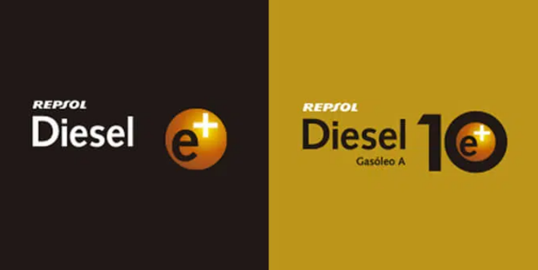

AgroDiesel e+10
El gasóleo B más avanzado para tu maquinaria agrícola.
Gasóleo agrícola aditivado que mantiene limpio el sistema de inyección, reduce
la obstrucción de filtros y ayuda a que tu tractor y maquinaria rindan como el primer día.
Alarga la vida útil del motor y disminuye averías.
Especialmente recomendado para maquinaria agrícola de última generación.
Es el único carburante recomendado por John Deere, New Holland y Kubota.
Pedir

Energy e+
Confort en tu hogar con un consumo más eficiente.
Gasóleo de calefacción desarrollado para calderas de condensación y quemadores de llama azul,
con rendimientos comparables al gas natural.
Gracias a su bajo contenido en azufre y a su formulación exclusiva, supera las exigencias
de los principales fabricantes de calderas y cumple los estándares europeos más estrictos.
Pedir

Diesel e+ y Diesel e+10
Máxima protección para tu motor y toda su potencia.
Carburantes diésel de alta gama que incorporan aditivos antioxidantes patentados
para proteger el motor, mejorar la combustión y garantizar una inyección más precisa.
Pensados para quienes buscan calidad, fiabilidad y un diésel respetuoso con el medio ambiente
para su vehículo del día a día.
Pedir